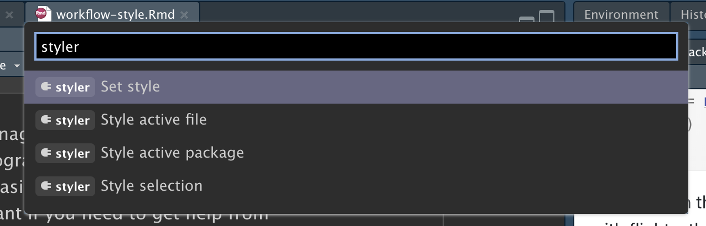

4 Flujo de trabajo: estilo de código
Un buen estilo de codificación es como la puntuación correcta: puede arreglárselas sin ella, pero seguro que hace que todo sea más fácil de leer. Incluso como un programador muy nuevo, es una buena idea trabajar en su estilo de código. El uso de un estilo consistente hace que sea más fácil para los demás (¡incluido el futuro usted!) Leer su trabajo y es particularmente importante si necesita ayuda de otra persona. Este capítulo presentará los puntos más importantes de la guía de estilo de tidyverse, que se utiliza a lo largo de este libro.
Diseñar su código se sentirá un poco tedioso al principio, pero si lo practica, pronto se convertirá en una segunda naturaleza. Además, hay algunas herramientas excelentes para cambiar rápidamente el estilo del código existente, como el paquete styler de Lorenz Walthert. Una vez que lo haya instalado con install.packages("styler"), una manera fácil de usarlo es a través de la paleta de comandos de RStudio. La paleta de comandos le permite usar cualquier comando integrado de RStudio y muchos complementos proporcionados por paquetes. Abra la paleta presionando Cmd/Ctrl + Shift + P, luego escriba “styler” para ver todos los accesos directos que ofrece styler. Figura 4.1 muestra los resultados.
Usaremos los paquetes tidyverse y nycflights13 para ejemplos de código en este capítulo.
4.1 Nombres
Hablamos brevemente sobre nombres en Sección 2.3. Recuerde que los nombres de variables (los creados por <- y los creados por mutate()) deben usar solo letras minúsculas, números y _. Use _ para separar palabras dentro de un nombre.
Como regla general, es mejor preferir nombres largos y descriptivos que sean fáciles de entender en lugar de nombres concisos que se escriban rápidamente. Los nombres cortos ahorran relativamente poco tiempo al escribir código (especialmente porque el autocompletado lo ayudará a terminar de escribirlos), pero puede llevar mucho tiempo cuando vuelve al código antiguo y se ve obligado a descifrar una abreviatura críptica.
Si tiene un montón de nombres para cosas relacionadas, haga todo lo posible para ser coherente. Es fácil que surjan inconsistencias cuando olvidas una convención anterior, así que no te sientas mal si tienes que volver atrás y cambiar el nombre de las cosas. En general, si tiene un montón de variables que son una variación de un tema, es mejor que les dé un prefijo común en lugar de un sufijo común porque la función de autocompletar funciona mejor al comienzo de una variable.
4.2 Espacios
Coloque espacios a cada lado de los operadores matemáticos aparte de ^ (es decir, +, -, ==, <, …), y alrededor del operador de asignación (<-).
# Ejemplo de como debe ser:
z <- (a + b)^2 / d
# Ejemplo de como no debe ser:
z<-( a + b ) ^ 2/dNo ponga espacios dentro o fuera de los paréntesis para las llamadas a funciones normales. Siempre ponga un espacio después de una coma, como en español estándar.
Está bien agregar espacios adicionales si mejora la alineación. Por ejemplo, si está creando múltiples variables en mutate(), es posible que desee agregar espacios para que todos los = se alineen.1 Esto hace que sea más fácil hojear el código.
4.3 Pipes
|> siempre debe tener un espacio antes y, por lo general, debe ser lo último en una línea. Esto hace que sea más fácil agregar nuevos pasos, reorganizar pasos existentes, modificar elementos dentro de un paso y obtener una vista de 10,000 pies hojeando los verbos en el lado izquierdo.
Si la función que está canalizando tiene argumentos con nombre (como mutate() o summarize()), coloque cada argumento en una nueva línea. Si la función no tiene argumentos con nombre (como select() o filter()), mantén todo en una línea a menos que no encaje, en cuyo caso deberías poner cada argumento en su propia línea.
Después del primer paso de la canalización, sangra cada línea con dos espacios. RStudio colocará automáticamente los espacios después de un salto de línea después de |> . Si está colocando cada argumento en su propia línea, sangre con dos espacios adicionales. Asegúrese de que ) esté en su propia línea y sin sangría para que coincida con la posición horizontal del nombre de la función.
# Ejemplo de como debe ser:
flights |>
group_by(tailnum) |>
summarize(
delay = mean(arr_delay, na.rm = TRUE),
n = n()
)
# Ejemplo de como no debe ser:
flights|>
group_by(tailnum) |>
summarize(
delay = mean(arr_delay, na.rm = TRUE),
n = n()
)
# Avoid
flights|>
group_by(tailnum) |>
summarize(
delay = mean(arr_delay, na.rm = TRUE),
n = n()
)Está bien eludir algunas de estas reglas si su canalización se ajusta fácilmente a una línea. Pero en nuestra experiencia colectiva, es común que los fragmentos cortos crezcan más, por lo que generalmente ahorrará tiempo a largo plazo si comienza con todo el espacio vertical que necesita.
Finalmente, tenga cuidado al escribir canalizaciones muy largas, digamos más de 10-15 líneas. Trate de dividirlas en subtareas más pequeñas, dando a cada tarea un nombre informativo. Los nombres ayudarán al lector a comprender lo que está sucediendo y facilitarán la verificación de que los resultados intermedios son los esperados. Siempre que pueda dar a algo un nombre informativo, debe darle un nombre informativo, por ejemplo, cuando cambia fundamentalmente la estructura de los datos, por ejemplo, después de pivotar o resumir. ¡No esperes hacerlo bien la primera vez! Esto significa romper canalizacionesías largas si hay estados intermedios que pueden obtener buenos nombres.
4.4 ggplot2
Las mismas reglas básicas que se aplican a pipe también se aplican a ggplot2; simplemente trate + de la misma manera que |>.
Nuevamente, si no puede incluir todos los argumentos de una función en una sola línea, coloque cada argumento en su propia línea:
flights |>
group_by(dest) |>
summarize(
distance = mean(distance),
speed = mean(distance / air_time, na.rm = TRUE)
) |>
ggplot(aes(x = distance, y = speed)) +
geom_smooth(
method = "loess",
span = 0.5,
se = FALSE,
color = "white",
linewidth = 4
) +
geom_point()Esté atento a la transición de |> a +. Desearíamos que esta transición no fuera necesaria, pero desafortunadamente, ggplot2 se escribió antes de que se descubriera la canalización.
4.5 Seccionamiento de comentarios
A medida que sus secuencias de comandos se hacen más largas, puede usar comentarios de sección para dividir su archivo en partes manejables:
# Cargar datos ----------------------------------
# Graficar datos --------------------------------RStudio proporciona un atajo de teclado para crear estos encabezados (Cmd/Ctrl + Shift + R), y los mostrará en el menú desplegable de navegación de código en la parte inferior izquierda del editor, como se muestra en Figura 4.2.

4.6 Ejercicios
-
Cambie el estilo de las siguientes canalizaciones siguiendo las pautas anteriores.
flights|>filter(dest=="IAH")|>group_by(year,month,day)|>summarize(n=n(), delay=mean(arr_delay,na.rm=TRUE))|>filter(n>10) flights|>filter(carrier=="UA",dest%in%c("IAH","HOU"),sched_dep_time> 0900,sched_arr_time<2000)|>group_by(flight)|>summarize(delay=mean( arr_delay,na.rm=TRUE),cancelled=sum(is.na(arr_delay)),n=n())|>filter(n>10)
4.7 Resumen
En este capítulo, ha aprendido los principios más importantes del estilo de código. Al principio, pueden parecer un conjunto de reglas arbitrarias (¡porque lo son!), pero con el tiempo, a medida que escriba más código y comparta código con más personas, verá lo importante que es un estilo coherente. Y no se olvide del paquete styler: es una excelente manera de mejorar rápidamente la calidad del código mal diseñado.
En el próximo capítulo, volvemos a las herramientas de ciencia de datos y aprendemos sobre los datos ordenados. Tidy data es una forma consistente de organizar sus data frames que se utiliza en todo el tidyverse. Esta consistencia facilita su vida porque una vez que tiene datos ordenados, solo funciona con la gran mayoría de las funciones de tidyverse. Por supuesto, la vida nunca es fácil y la mayoría de los conjuntos de datos que encuentre en la naturaleza no estarán ya ordenados. Entonces, también le enseñaremos cómo usar el paquete tidyr para ordenar sus datos desordenados.
Dado que
dep_timeestá en formatoHMMoHHMM, usamos la división de enteros (%/%) para obtener la hora y el resto (también conocido como módulo,%%) para obtener los minutos.↩︎